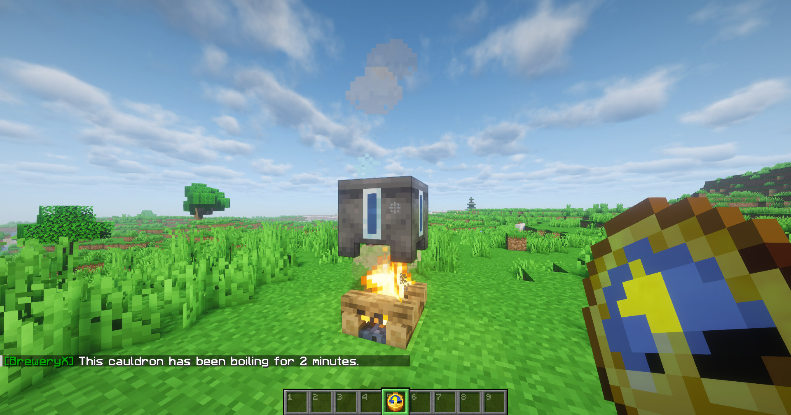
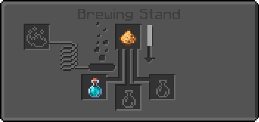
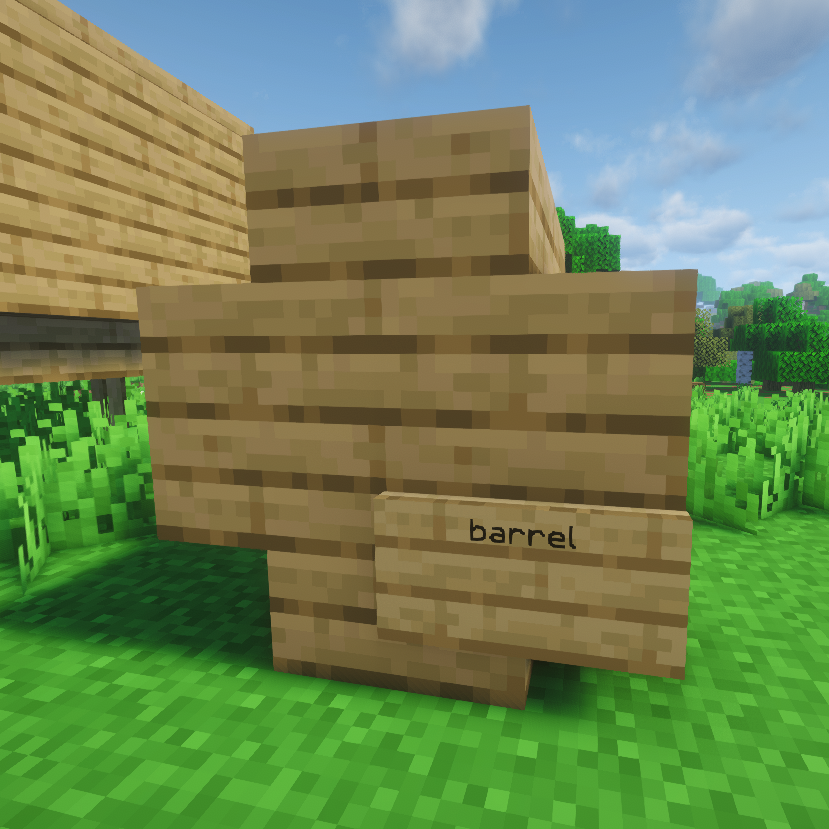
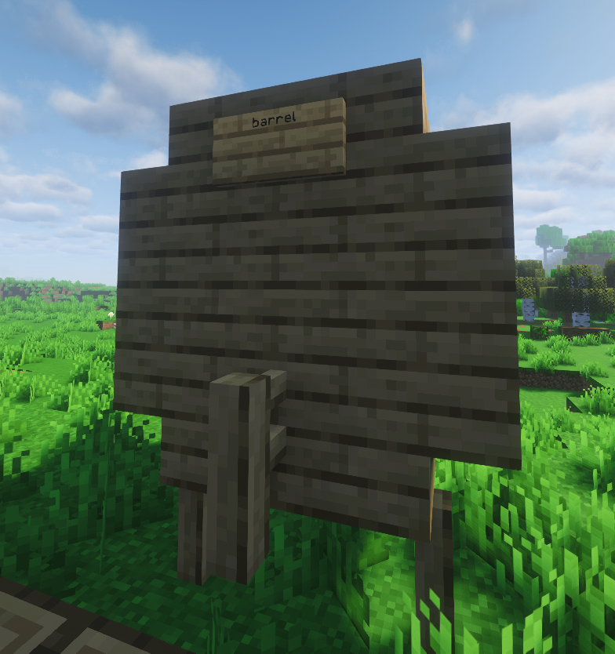
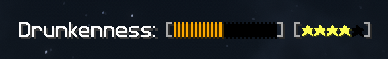

ALKOHOLE - INSTRUKCJA

Gotowanie
Najpierw zbierasz wszystkie potrzebne składniki w przepisie.
Umieszczasz je w kotle znajdującym się nad źródłem ciepła i gotujesz przez określony czas.
To, jak długo gotuje się już woda w kotle możesz sprawdzić klikając prawym przyciskiem myszy na kocioł trzymając w ręce zegar.
W trakcie gotowania składniki łączą się, tworząc bazę trunku, którą możesz zebrać do pustej butelki.
Im dłużej napój będzie się gotował, tym lepszy będzie jego smak i aromat, lecz zbyt długie gotowanie może spowodować pogorszenie jakości.
To pierwszy i podstawowy etap przygotowania trunku.
Destylacja
Nie każdy trunek wymaga destylacji, ale jeśli przepis ją przewiduje, jest to krok wzmacniający alkohol i oczyszczający napój z niepożądanych aromatów.
Destyluje się za pomocą statywu alchemicznego, w którym umieszcza się jasnopył oraz gotowaną wcześniej bazę trunku.
Proces może wymagać powtórzenia kilka razy - każdy przebieg destylacji zwiększa moc alkoholu.
Ważne jest dokładne przestrzeganie przepisu, aby uzyskać jak najlepszą jakość.
Leżakowanie
 Po ugotowaniu i ewentualnej destylacji otrzymany trunek wsadzasz do beczki wykonanej z określonego w przepisie rodzaju drewna.
Beczki nadają trunkowi charakterystyczny aromat, smak, i kolor.
Czas leżakowania wpływa na głębię smaku - im dłużej napój dojrzewa, tym staje się bardziej wyrazisty i aromatyczny.
Niektóre trunki wymagają bardzo długiego leżakowania.
Budowa beczek
Jakość
Po zakończeniu leżakowania sprawdzasz jakość trunku. Jakość dzieli się na trzy poziomy:
Picie i efekty
Gdy wypijesz trunek, odczuwasz jego efekty, które zależą od jakości napoju.
Mogą to być np. wzmocnienie siły, przyspieszenie regeneracji, ochrona przed ogniem lub specjalne bonusy zależne od przepisu.